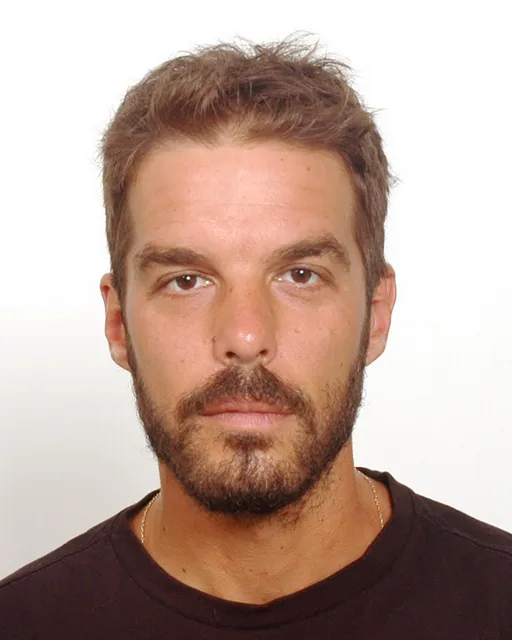

Creative DirectorAndrija Kovač
Co-founder of Panorama Films Collective and director of photography, exploring the space between film, photography and design. He has directed and shot short films, video essays and branded films for companies, NGOs, startups, artists and activist groups.